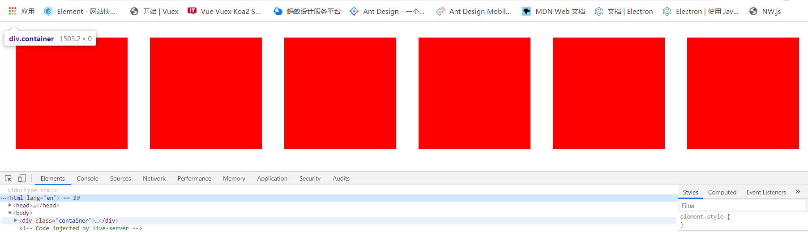
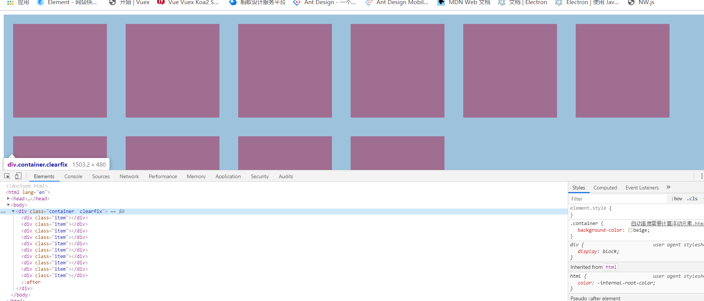
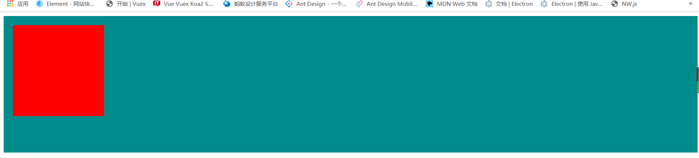
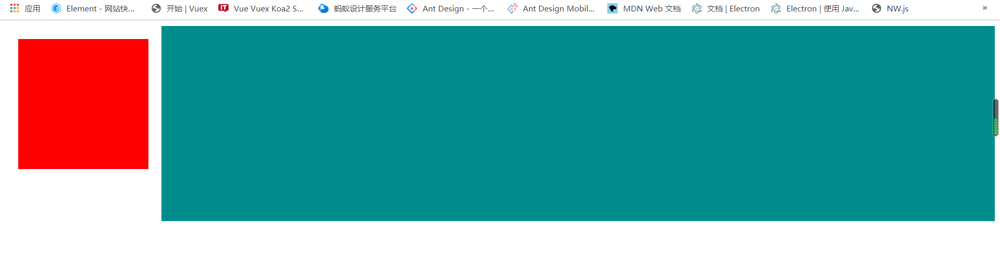
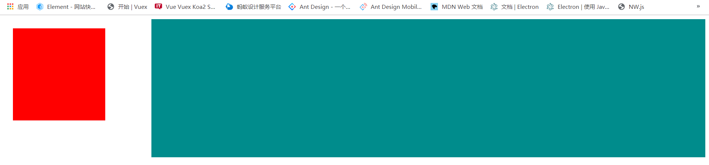
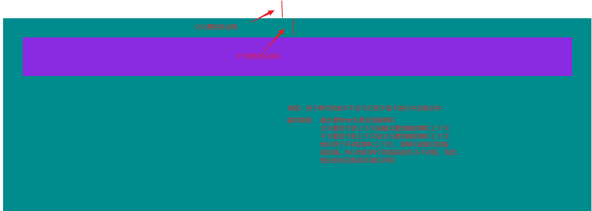

块级格式化上下文
块级格式化上下文（Block Formatting Context，BFC）
是Web页面的可视化CSS渲染的一部分，是块盒子的布局过程发生的区域，也是浮动元素与其他元素交互的区域
根据MDN官网介绍
下列方式会创建块格式化上下文：
- 根元素(
<html>)- 浮动元素（元素的
float不是none）- 绝对定位元素（元素的
position为absolute或fixed）- 行内块元素（元素的
display为inline-block）- 表格单元格（元素的
display为table-cell，HTML表格单元格默认为该值）- 表格标题（元素的
display为table-caption，HTML表格标题默认为该值）- 匿名表格单元格元素（元素的
display为table、``table-row、table-row-group、``table-header-group、``table-footer-group（分别是HTML table、row、tbody、thead、tfoot的默认属性）或inline-table）overflow值不为visible的块元素display值为flow-root的元素contain值为layout、content或 paint 的元素- 弹性元素（
display为flex或inline-flex元素的直接子元素）- 网格元素（
display为grid或inline-grid元素的直接子元素）- 多列容器（元素的
column-count或column-width不为auto，包括 ``column-count为1）column-span为all的元素始终会创建一个新的BFC，即使该元素没有包裹在一个多列容器中（标准变更，Chrome bug）。
浮动定位和清除浮动时只会应用于同一个BFC内的元素。浮动不会影响其它BFC中元素的布局，而清除浮动只能清除同一BFC中在它前面的元素的浮动。外边距折叠也只会发生在属于同一BFC的块级元素之间
总结：
BFC是一个独立的渲染区域，他规定了在该区域中，常规流块盒的布局
独立=>不同的BFC区域，它们进行渲染的时候 互不干扰
创建了BFC的元素，隔绝了它内部与外部的联系，内部的渲染不会影响到外部
具体规则：
创建BFC的元素：它的自动高度需要计算浮动元素
创建BFC的元素：它的边框盒不会与浮动元素重叠
创建BFC的元素：不会和它的子元素进行外边距合并
对于这些规则，下面会使用具体例子加以说明。
这个区域由某个HTML元素创建，常用的 常见的 会在内部创建BFC区域的元素：
- 根元素（html）
- 浮动，绝对定位，固定定位元素
- overflow不等于visible的块盒
规则特性的示例
示例 一 自动高度需要计算浮动元素
css代码
1 | .container{ |
2 | background-color: beige; |
3 | } |
4 | .item{ |
5 | float: left; |
6 | width: 200px; |
7 | height: 200px; |
8 | margin: 20px; |
9 | background-color: red; |
10 | } |
html代码
1 | <body> |
2 | <div class="container"> |
3 | <div class="item"></div> |
4 | <div class="item"></div> |
5 | <div class="item"></div> |
6 | <div class="item"></div> |
7 | <div class="item"></div> |
8 | <div class="item"></div> |
9 | <div class="item"></div> |
10 | <div class="item"></div> |
11 | <div class="item"></div> |
12 | <div class="item"></div> |
13 | </div> |
14 | </body> |

可以看出，此时类为container的容器的高度为0，这也就是因为浮动脱离的文档流，形成了BFC，而常规流块盒不会计算浮动元素的高度。 造成了高度坍塌的问题
解决的办法有两个思路（注意：是两个思路，而不是两种解决办法）
使用clear+伪类的方法清除浮动，也就是在最后面添加一个元素清除浮动，撑开元素的高度
css代码
1.container{2background-color: beige;3}45.item{6float: left;7width: 200px;8height: 200px;9margin: 20px;10background-color: red;11}1213+ .clearfix::after{14content: "";15display: block;16clear: both;17}html代码
1<body>2+ <div class="container clearfix">3<div class="item"></div>4<div class="item"></div>5<div class="item"></div>6<div class="item"></div>7<div class="item"></div>8<div class="item"></div>9<div class="item"></div>10<div class="item"></div>11<div class="item"></div>12<div class="item"></div>13</div>14</body>效果：

使用创建BFC区域，因为BFC会计算浮动元素。即 只要能创建BFC都可以解决 根据不同的场景使用不同的方法
这里只是随便列举一个方法
css代码
1.container{2background-color: beige;3+ position: absolute;4+ /* overflow: hidden;这种方式副作用最小 */5+ /* float: left; */6}78.item{9float: left;10width: 200px;11height: 200px;12margin: 20px;13background-color: red;14}html代码
1<body>2- <div class="container">3<div class="item"></div>4<div class="item"></div>5<div class="item"></div>6<div class="item"></div>7<div class="item"></div>8<div class="item"></div>9<div class="item"></div>10<div class="item"></div>11<div class="item"></div>12<div class="item"></div>13</div>14</body>效果：
例子 二 BFC边框盒不会与浮动元素重叠
BFC不会与浮动元素的边框盒重叠，这样会方便我们做很多布局。例如：
css代码
1 | .float{ |
2 | width: 200px; |
3 | height: 200px; |
4 | margin: 20px; |
5 | background-color: red; |
6 | float: left; |
7 | } |
8 | |
9 | .container{ |
10 | height: 300px; |
11 | background-color: #008c8c; |
12 | /* overflow: hidden; */ |
13 | } |
html代码
1 | <body> |
2 | <div class="float"></div> |
3 | <div class="container"></div> |
4 | </body> |
效果：

当把overflow: hidden;的注释打开时，就会在内部创建BFC，渲染的效果如下：

此时如果设置BFC的左外边距的话，只要外边距不超过左边浮动盒子的大小，就是无效的。
因为此时设置做外边距会被左边的浮动元素覆盖。
如果要设置两个盒子的间距的话，需要设置左边浮动盒子的右外边距 margin-right: 100px;
设置后效果如下

根据这个效果，可以做很多一边固定一边自适应的布局，也可以做多边固定，一边自适应。比如：圣杯布局，双飞翼布局，都可以使用这个特性进行布局。
注意：对定位不会有这种特性。原因是：浮动元素不完全脱离常规流。而定位是完全脱离常规流
示例三 BFC不会和它的子元素进行外边距合并
BFC不会和它的子元素进行外边距合并，而标准流会进行外边距合并。这就是为什么在布局的时候，会出现外边距合并的原因，以及出现这种问题的时候我们为什么一般都会使用overflow: hidden(不是唯一的)解决外边距合并的根本原因。例如：
css代码
1 | .father{ |
2 | background-color: #008c8c; |
3 | height: 500px; |
4 | margin-top: 50px; |
5 | } |
6 | .son{ |
7 | background-color: blueviolet; |
8 | height: 100px; |
9 | margin: 50px; |
10 | } |
html代码
1 | <div class="father"> |
2 | <div class="son"> |
3 | </div> |
4 | </div> |
效果：
根据代码和效果图可以看出：父盒子与子盒子的外边距进行了合并
给父元素加上overflow：hidden属性后，解决外边距合并后的效果图：

根本原因:
根元素html元素会创建BFC
父元素处于的上下文是根元素创建的BFC上下文
子元素处于的上下文是父元素创建的BFC上下文
他们处于不同的BFC上下文，而BFC是独立的渲
染区域。所以他们两个的渲染是互不干扰的，因此
他们的外边距是不能合并的
具体代码：
css代码：
1 | .father{ |
2 | background-color: #008c8c; |
3 | height: 500px; |
4 | margin-top: 50px; |
5 | + overflow: hidden; |
6 | } |
7 | .son{ |
8 | background-color: blueviolet; |
9 | height: 100px; |
10 | margin: 50px; |
11 | } |
html代码不变
注意：部分文章可能会在不就的将来更新
如果能够帮助到你，是小编最大的荣幸
当然 有 不好的地方 请大家帮忙指出 学习永无止境
小编一直认为 人外有人 天外有天 一起学习 共同进步
让我们共同加油吧！！！
原文作者: Yunjie Ge
原文链接: http://www.blog.geyunjie.com/2017/09/12/block/
版权声明: 转载请注明出处(必须保留作者署名及链接)